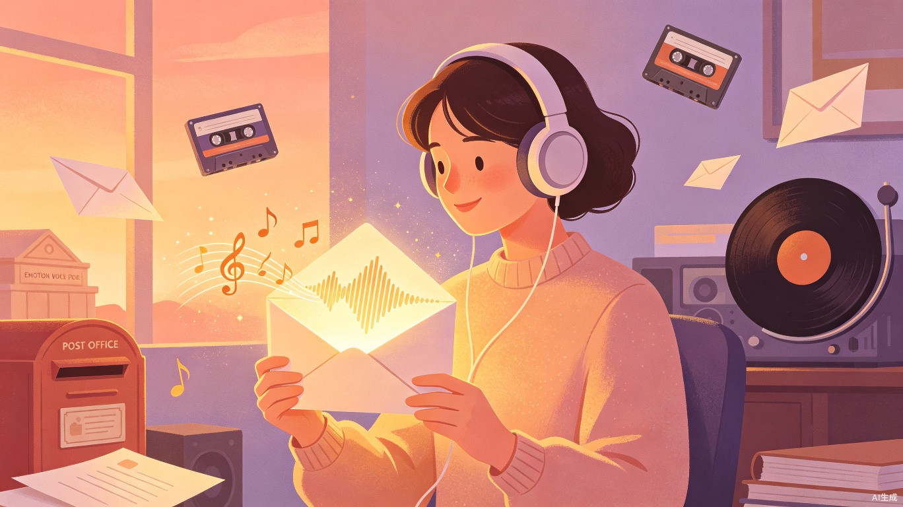
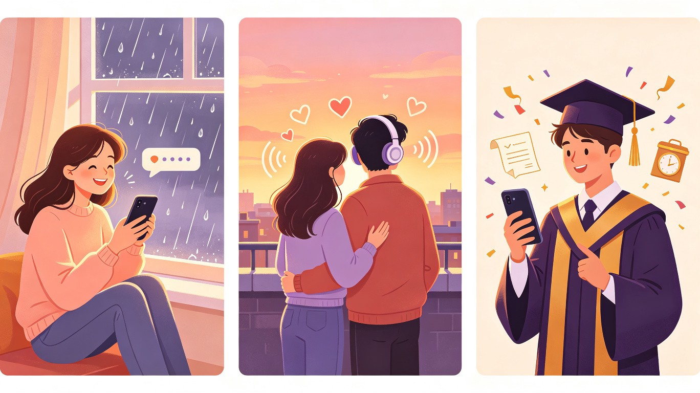

✉ 创意名称 + 创意介绍
情绪定制声音邮局
一款基于情绪识别的定制化音频信件服务，用户写下想说的话，系统识别文字背后的情绪色彩，自动搭配对应的背景音乐与环境音效，用户再用自己的声音录制朗读，最终合成一封独一无二的"声音信件"——可即时发送，也可封存至未来某个指定日期自动寄出。
想解决什么问题
很多重要的话（告白、道歉、祝福、遗憾）很难当面说出口，写在纸上看得到字却感受不到温度，发微信又太随意、容易遗忘。人们需要一种比文字更有温度、比见面更低压力的表达方式。
为什么会想到做这个
声音是人类最原始的沟通方式，一个语调的颤抖、一个呼吸的停顿，都是文字无法承载的情感。我们想把这种"被声音击中"的感受，变成每个人都能轻松拥有的体验。
大概是什么产品
微信小程序 + H5 网页，用户在手机上即可完成全部操作：写文字 → 选择情绪标签 → AI 推荐背景音 → 手机录制朗读 → 合成声音信件 → 发送或封存。无需下载独立 App，打开即用，低门槛传播。
👥 目标用户及痛点

恋爱中的年轻人（18-28 岁）
情侣纪念日、异地恋生日、想表白但不敢当面开口。需要一个有仪式感的方式表达心意。
毕业生 / 校园学生
毕业留言、感谢师友、写给未来的自己。毕业季大量情感需要出口，却缺少承载形式。
有话想说但说不出口的人
想道歉却拉不下脸、想表达感谢却觉得矫情、有遗憾想弥补。需要一种"低压力高温度"的出口。
独处时刻的记录者
深夜emo、生日感怀、新年许愿——写给未来自己的时间胶囊式语音信，在指定日期收到过去的自己的声音。
使用场景
当前痛点
- 文字太冷——微信打字、写信都缺少"人在耳边说话"的温度，情感的微妙波动无法传达。
- 语音消息太随意——60 秒语音条像对讲机，没有仪式感，容易被当成噪音忽略。
- 见面说太紧张——告白、道歉需要勇气，当面表达容易词不达意或错过时机。
- 代写代录没诚意——网上付费代写情书是别人的话，与自己的声音无关，接收方完全能感受到。
- 时间胶囊无承载——写给未来自己的话没有好的数字化载体，纸条容易丢，备忘录没氛围。
✨ 价值与意义
商业价值
情绪消费是 Z 世代的高意愿付费品类。基础信件免费，高级音效、定制声纹、实体化音频明信片（二维码扫码听）为增值点。节日节点（情人节、毕业季、新年）天然形成付费高峰，具备可规模化的传播路径。
效率提升
把"想表达却表达不好"的 friction 降到最低：用户只需写文字和录音两步，AI 自动完成情绪分析、背景音推荐、音频合成。比传统手工录制信件效率提升 10 倍以上。
社会价值
为不善言辞的人提供情感出口；"写给未来自己"功能帮助年轻人建立自我对话习惯，关注心理健康；封存信件可在亲友离世后作为遗产打开——声音比文字更能跨越时间。附带"社会公益"标签，呼吁关注留守儿童情感陪伴。
📱 产品原型体验
点击下方手机内的按钮，体验声音信件的创建流程
选择你的情绪
为你推荐的氛围音效
AI 根据你的情绪自动推荐，也可手动切换
用你自己的声音朗读你写下的话
选择寄出方式
收件人